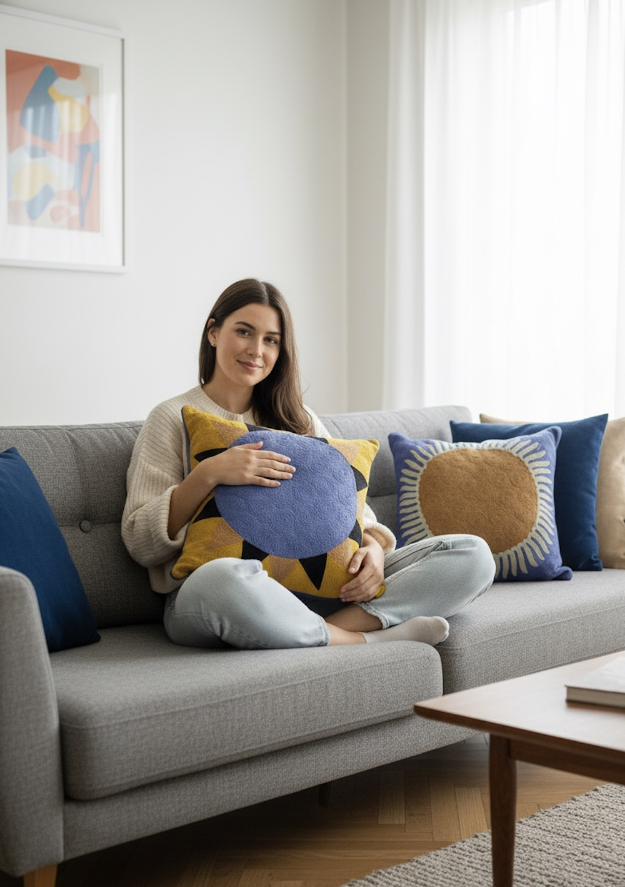
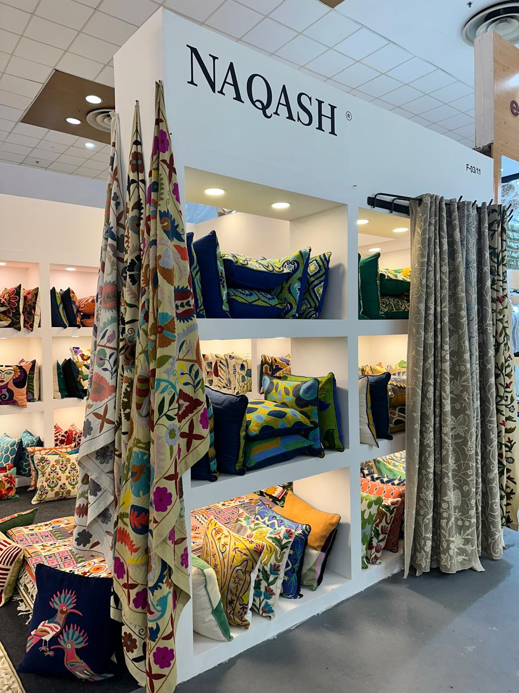
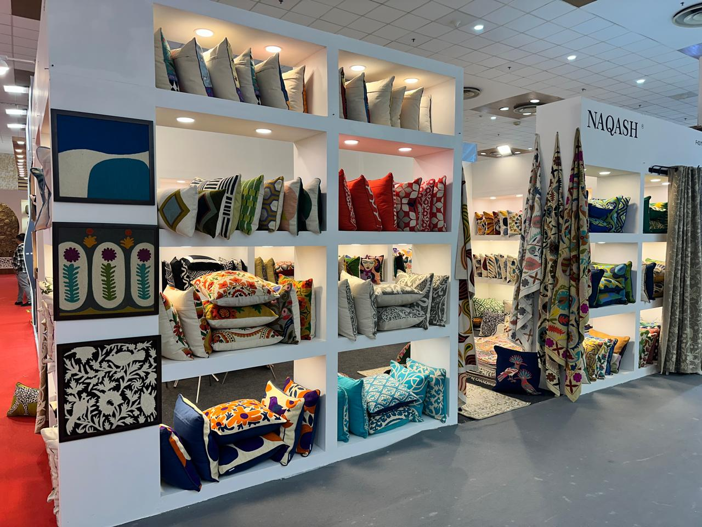
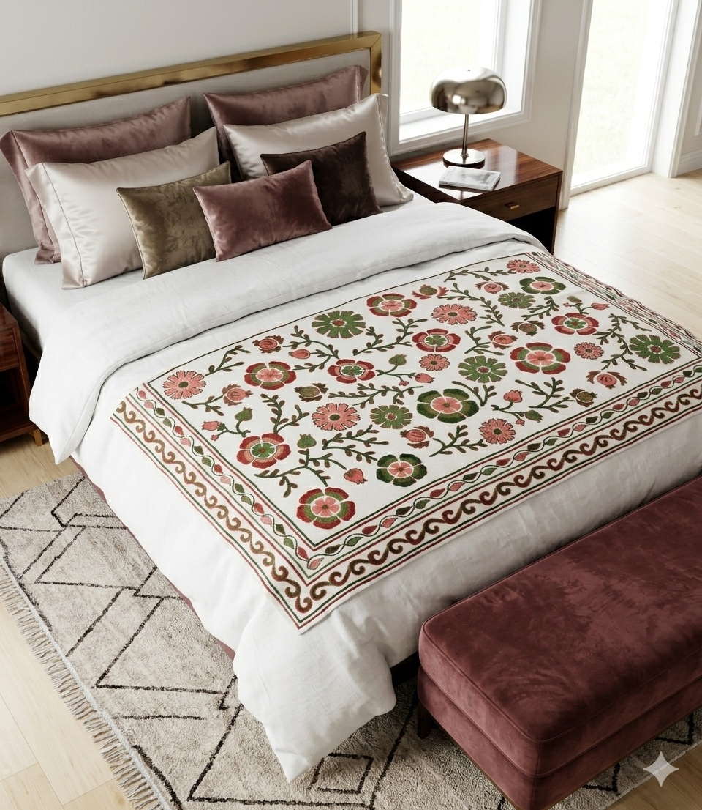

Srinagar, Kashmir — Three generations
A gift for the world,
from Kashmir.
Hand-embroidered cushions, crewel fabrics, chain stitch rugs and pashmina — every thread drawn, stitched and scrutinised by the hands of master artisans.

In your home, from our hands — embroidered in Srinagar
Our Story
Three generations
of craftsmanship.
For over seventy years, our family has practised the patient arts of the Vale of Kashmir — crewel work, chain stitch, sozni and naqashi — passing needle and pattern from father to son, hand to hand.
Every thread, every stitch and every colour is scrutinised before a piece leaves our hands. It is slow work. We would not have it any other way.


The Collections
Four crafts, one lineage.
Every piece begins as a drawing — a naqashi — and passes through months of hand embroidery before it earns our name.
The Craft
From drawing
to heirloom.
Naqashi — the drawing
Each design begins with the naqash, the master draughtsman, who draws the pattern freehand and perforates it onto cloth — a craft kept within families for centuries.
The stitch
Artisans work silk and wool thread through cotton and pashmina, one stitch at a time. A single rug or shawl can carry months of a craftsman’s days.
The scrutiny
Before anything leaves Srinagar, every thread, every stitch and every colour is examined against the original drawing. Only then does it carry our name.
“Every thread, every stitch and every colour is scrutinised —
that is the House of Naqash.”

The piece, and its making — one commission, from drawing to delivery.
Bespoke
Intricate, customisable designs.
Beyond the collections — silk and woollen cushions, fabrics by the metre, throws, chain stitch rugs, bags and pouches, pashmina shawls, wall art and lamp shades — we work to commission.
Your palette, your dimensions, your pattern. Share a reference or a room, and our naqash will draw it for you.
Begin a commission